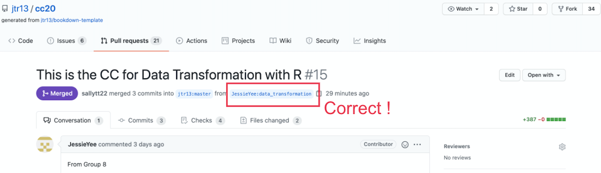
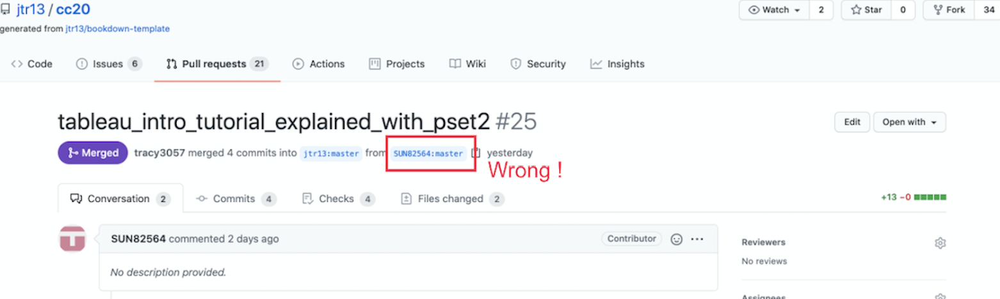
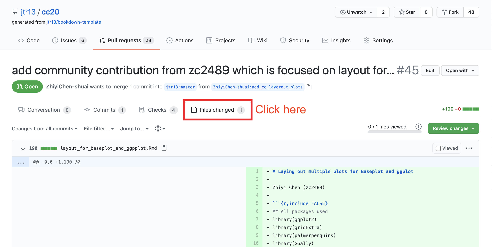
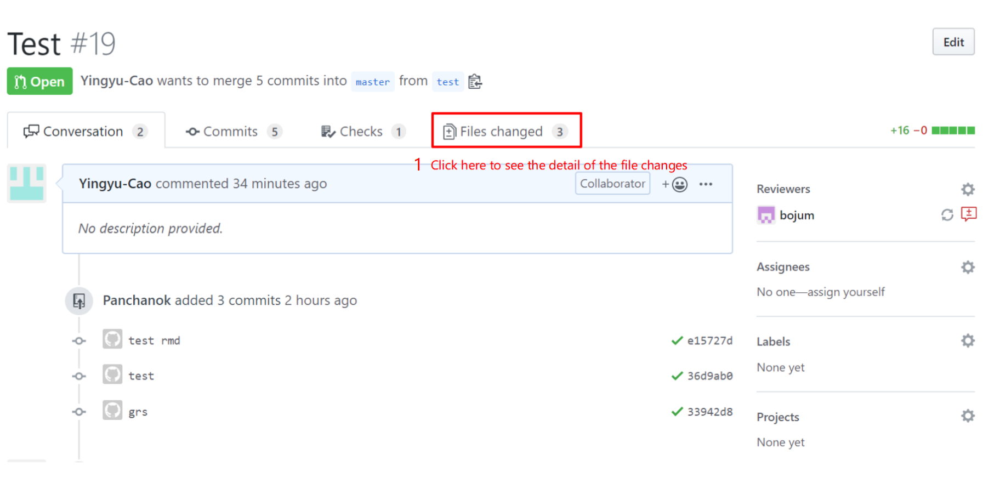
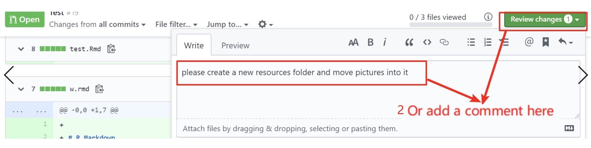
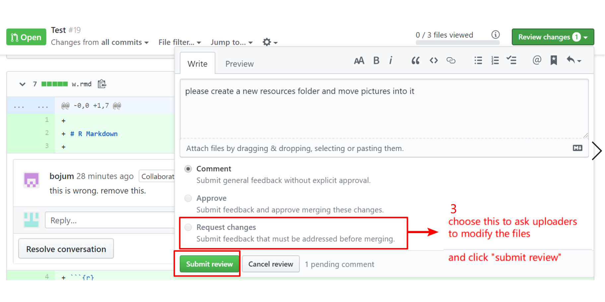
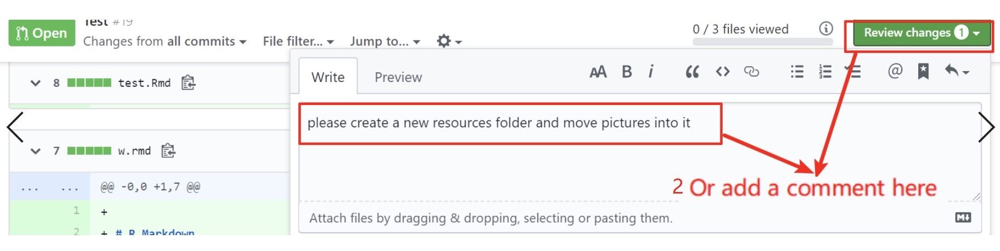
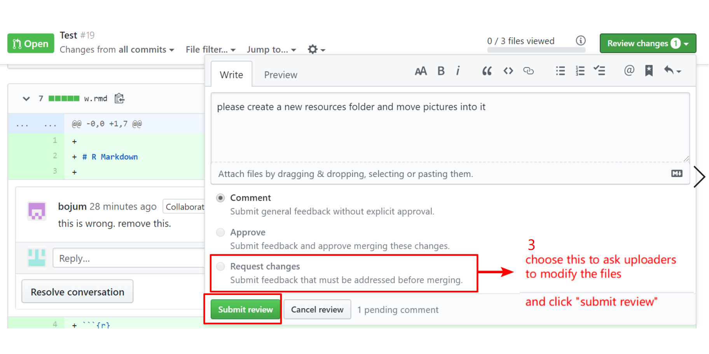
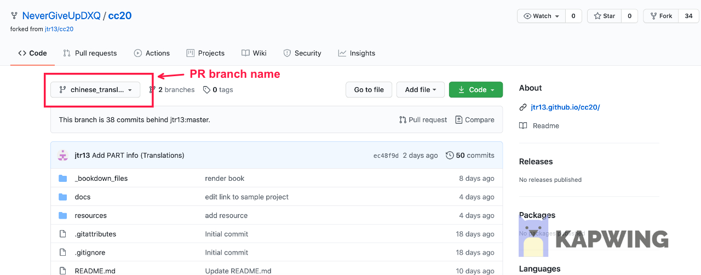
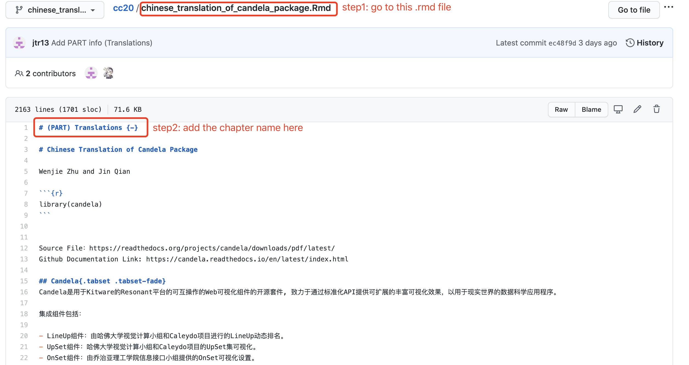

57 Tutorial for pull request mergers
57.1 General
The following is a checklist of steps to perform before merging the pull request. At any point, if you’re not sure what to do, request a review from one of the PR leaders.
57.2 Check branch
PR should be submitted from a non-main branch.

If PR was submitted from the main branch, provide these instructions on how to fix the problem:
Close this PR.
Follow the instructions here for forgetting to branch if you committed and pushed to GitHub: https://edav.info/github#fixing-mistakes
If you have trouble with 2., then delete the local folder of the project, delete your fork on GitHub, and start over.
Open a new PR.

57.3 Examine files that were added or modified

There should be only ONE
.Rmdfile.All of the additional resources should be in the
resources/<project_name>/folder.There should be no other files in the root directory besides the
.Rmdfile.
57.4 Check .Rmd filename
- The
.Rmdfilename should be words only and joined with underscores, no white space. (Update: It does not need to be the same as the branch name.) - The
.Rmdfilename can only contain lowercase letters. (Otherwise the filenames do not sort nicely on the repo home page.)
57.5 Check .Rmd file contents
- The file should not contain a YAML header nor a
---line. - The second line should be blank, followed by the author name(s).
- The first line should start with a single hashtag
#, followed by a single whitespace, and then the title. - There should be no additional single hashtag headers in the chapter. (If there are, new chapters will be created.)
- Other hashtag headers should not be followed by numbers since the hashtags will create numbered subheadings. Correct:
## Subheading. Incorrect:## 3. Subheading. - If the file contains a setup chunk in
.Rmdfile, it should not contain asetuplabel. (The bookdown render will fail if there are duplicate chunk labels.)
i.e. use{r, include=FALSE}instead of{r setup, include=FALSE}.
See sample.Rmd - Links to internal files must contain
resources/<project_name>/in the path, such as: - The file should not contain any
install.packages(),writefunctions,setwd(), orgetwd(). - If there’s anything else that looks odd but you’re not sure, assign
jtr13to review and explain the issue.
57.6 Request changes
If there are problems with any of the checks listed above, explain why the pull request cannot be merged and request changes by following these steps:
 

Then, add a changes requested label to this pull request.
Your job for this pull request is done for now. Once contributors fix their requests, review again and either move forward with the merge or explain what changes still need to be made.
57.7 Steps to Merge the PR
Before we click “Merge” there are a few more things to do.
57.7.1 Update the branch
If an “Update Branch” is visible toward the end on the Conversation tab of the pull request, click on it. This will ensure that we are working with the most up-to-date versions of _bookdown.yml and DESCRIPTION.
Next we will make changes to these files on the contributor’s branch.
57.7.2 Add the filename of the chapter to _bookdown.yml
- Go to “Files Changed” and copy the filename of the
.Rmdfile.
-
Open the branch of the submitted PR by following these steps:
- To access the PR branch:

- Make sure you are on the PR branch by checking that the PR branch name is shown (not
main):
 Add the name of the new file in single quotes followed by a comma under the labelled section (eg. Cheatsheets, Tutorials etc).
Save the edited version.
57.7.3 (Add part names to .Rmd for every first article in part)
Only do this if you are adding the first chapter in a PART.
One person should manage this, otherwise it will be hard to keep the project organized.
For every first article of each part, add the chapter name on the top of the .Rmd file, then propose changes. The example is like this.

57.7.4 Add new libraries to DESCRIPTION.
- Check the
.Rmdfor libraries needed. If any are missing, add them to theDESCRIPTIONfile on the contributor’s branch, in the same manner that we edited the_bookdown.ymlfile.
57.7.5 Merge the pull request
If you’re not sure that you did things correctly, assign one of the other maintainers or (jtr13?) to review before you merge the PR.
Return to the PR on the main page of the repo
www.github.com/jtr13/...If necessary resolve merge conflicts by clicking on the resolve merge conflicts button:
Then delete the lines with <<<<<<< xxxx, ======= and >>>>>>>> main and edit the file as desired. Click the “Marked as resolved” button and then the green “Commit merge” button. –>
- Click “Merge pull request” and then “Confirm merge”. Add a thank you note perhaps with an emoji such as
:tada:.
57.7.6 Check Actions
After a few minutes, click on the Actions tabs and check whether the build has been successful: a green dot indicates a successful run, a red X indicates a failed run.
Check the log to figure out what went wrong, and if you can, fix it. If you’re not sure what to do, not a problem, just open up an issue linking to the failed run so others can help (this is important so we can fix problems quickly). (Do not click
revert merge).